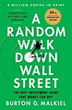

伯顿·马尔基尔（Burton G. Malkiel）是普林斯顿大学经济学教授，曾任总统经济顾问委员会委员及耶鲁大学管理学院院长。他于1973年首次出版《漫步华尔街》，此后历经十余次修订再版，累计销量超过一百五十万册。这本书问世的背景正值"漂亮50"股票热潮鼎盛之际，市场上充斥着各类选股秘诀与市场时机判断理论，马尔基尔却逆流而上，用严谨的学术研究向普通投资者证明：绝大多数主动管理型基金经理长期跑输大盘指数，而这一现象并非偶然，而是市场有效性的必然结果。
全书的核心概念是"随机漫步"假说——股票价格的短期波动基本无法预测，历史价格走势不包含有用的未来预测信息，因此技术分析（寻找价格图表中的规律）在统计上缺乏依据。马尔基尔用大量实证数据检验了各类市场分析方法：无论是基本面分析、技术分析，还是当时风靡一时的"增长股"理论，他都以市场有效理论为基础，指出这些方法在扣除交易成本和管理费用后几乎无法持续创造超额回报。他的结论是：对普通投资者而言，购买并持有覆盖整个市场的低成本指数基金，是最理性、最可靠的长期财富积累路径。
在投资工具的选择上，马尔基尔详细比较了储蓄账户、债券、房地产、共同基金与指数基金的历史表现，并就各类资产的风险收益特征给出了系统性分析。他特别指出，投资者在不同生命阶段应当调整资产配置比例——年轻时可以承担更多股权风险，临近退休则应逐步增加固定收益资产的比重。书中对行为金融学偏差的描述也颇具启发性：从"泡沫"的历史案例（郁金香狂热、南海泡沫）到现代投资者常犯的追涨杀跌错误，马尔基尔揭示了情绪和认知偏差如何系统性地损害投资者的实际收益。
《漫步华尔街》是美国投资经典读物中被引用最广泛的作品之一。诺贝尔经济学奖得主保罗·萨缪尔森曾评价此书："这本书应当成为每一位严肃投资者书架上的必备之作。"（This book should be on the bookshelf of every serious investor.）约翰·博格尔，先锋集团创始人、指数基金之父，将马尔基尔视为指数投资理念最有力的传播者之一，并多次在公开场合推荐本书。对于希望建立理性投资框架、摆脱市场噪音干扰的读者而言，《漫步华尔街》提供的不仅是投资技巧，更是一套经过半个世纪市场检验的投资哲学。